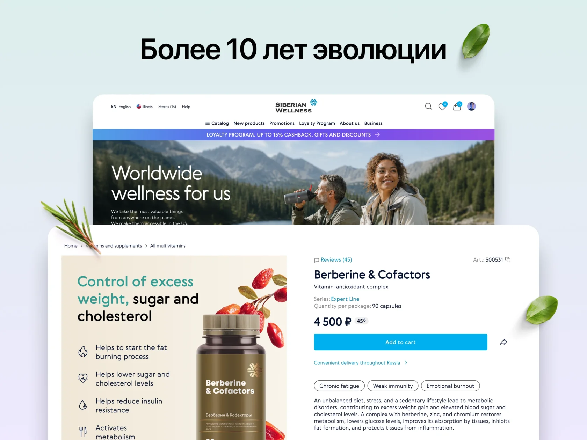
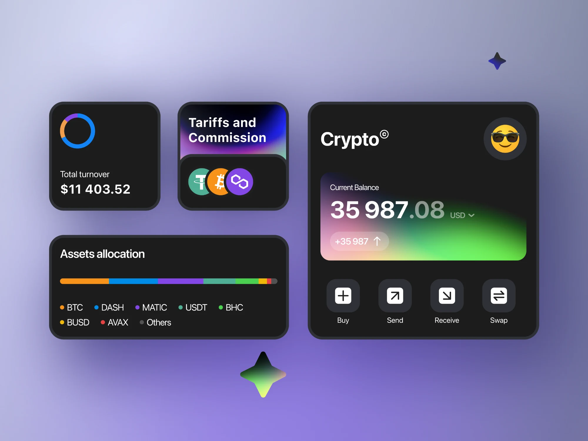

Launch a product
User journeys, visual direction and interfaces ready for development.
12+ years developing B2B services, financial products and eCommerce, from user research to interfaces and design systems.
Journeys, systems and practical interfaces

Product and application registration, budgeting and infrastructure in a single service.

An online store, a Business Partner workspace and a shared design system.

Calendar and floor-plan reservations, restaurant onboarding and a dashboard. In development.

Developing the exchange, wallet and payment services, from trading to virtual cards and Rewards.

An end-to-end transaction journey: documents, checks, statuses and operations workflows.

Restaurant discovery, time selection and reservation confirmation across web and mobile.
User journeys, visual direction and interfaces ready for development.
Research the current process, identify friction and design a coherent experience.
Shared tokens, components and principles for consistent product development.
For more than ten years I developed Siberian Wellness products: eCommerce, Back Office and a design system, working as a Product Designer and Design Lead.
At Beeline I worked on product launch journeys; at Stenn, financial operations; at ToBeOut, restaurant team tools.
More about my experience in my CV ↗Let’s connect
Tell me about your product, team and the collaboration you have in mind.